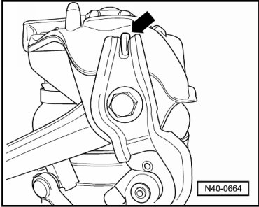
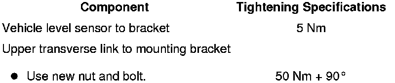

Vehicle Level Sensor Bracket, with Air Spring Damper
Vehicle Level Sensor Bracket, with Air Spring Damper
Removing
CAUTION!
Before starting work, stabilizer bars must be coupled in vehicles with separable stabilizer bars. Otherwise, there is the danger of injury caused by unintentional separation.
- Remove the front wheel housing liner.
- Disconnect the connector - 4 - from the vehicle level sensor - 3 -.

- Remove the pin in - direction of arrow - and unclip the connecting link from the upper control arm.
- Remove the front air spring damper. Refer to --> [ Air Spring Damper ] Air Spring Damper.
- Remove the bracket from the mounting bracket. Refer to --> [ Front Suspension Assembly Overview ] Front Suspension.
Installing
Installation is the reverse of removal, with special attention to the following:
The level control system sensor bracket must be against mounting bracket tab - arrow -.

- Connect the bracket with the vehicle level sensor to the mounting bracket. Refer to --> [ Front Suspension Assembly Overview ] Front Suspension.
- Install the front air spring damper. Refer to --> [ Air Spring Damper ] Air Spring Damper.
- Install the front wheel housing liner.
- Perform a basic setting on the level control system using --> vehicle diagnosis, testing and information system (VAS 5051B) "Guided Functions".
Tightening Specifications
